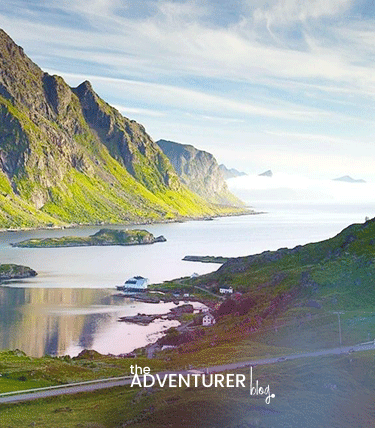

01.02.2019
Welcome to LAOS!
Besides being one of my all-time favorite people in the world, Jodi is also a damn amazing blogger who writes often about food and culture. She devotes a lot of time to food on the road, taking mouthwatering photos that make me jealous of her ability to do so. A former lawyer, she also writes a series called “Thrillable Hours” about other lawyers who gave up being a corporate lackey for life on the road. Besides being one of my all-tiut other lawyers who gave up being a corporate lackey for life on the road...